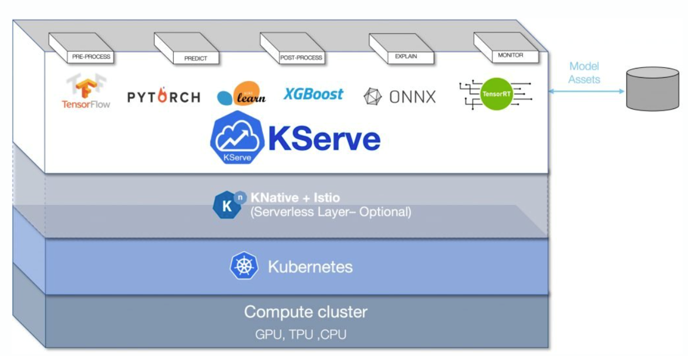
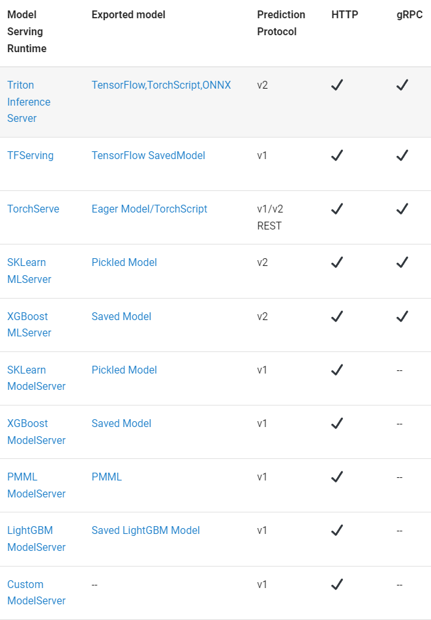
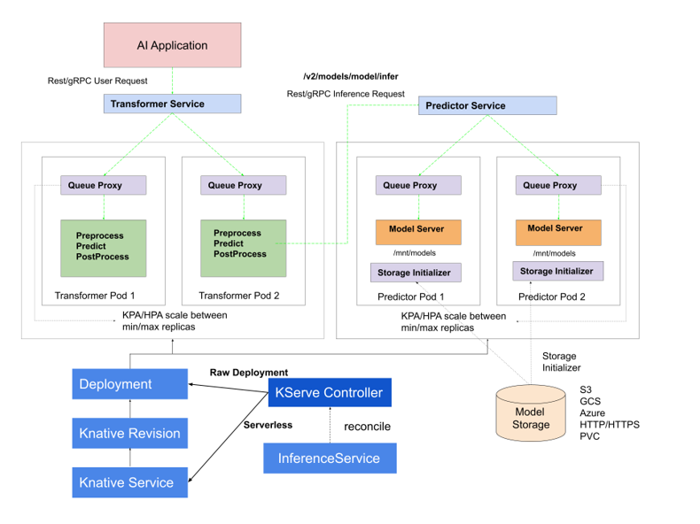
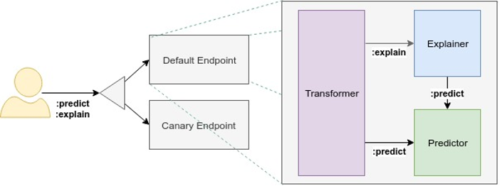

Serving
Serving
2021/09 까지 Kubeflow 안의 Component인 KFServing.
그 이후 독립적으로 취급,유지하게 되었고 KServe로 이름을 변경. 
다양한 모델 서빙 런타임에서 API를 제공
 더보기
다양한 장점이 존재
Scale to and from Zero
Request based Autoscaling on CPU/GPU
Revision Management
Optimized Container
Batching
Request/Response logging
Traffic management
Security with AuthN/AuthZ
Distributed Tracing
Out-of-the-box metrics
Ingress/Egress control
Control Plane
 더보기
InferenceService를 관리조정한다. KServe Controller를 통해 service/ingress resource/model server container/model agent container for request response logging,batching/model pulling 을 한다.
Data Plane
 더보기
Predictor: 모델과 모델 서버
Explainer: 모델을 통해 만들어진 결과물과 해석, explanation을 제공한다.
Transformer: 전/후 처리를 진행한다.
예제
https://github.com/myoh0623/kubeflow/tree/master/section7_kserve
https://kserve.github.io/website/0.9/modelserving/v1beta1/transformer/torchserve_image_transformer/#extend-modelserver-and-implement-prepost-processing-functions
출처
https://kserve.github.io/website/0.9/modelserving/control_plane/#control-plane-components
https://youtu.be/2yLXrXG3n-U
https://youtu.be/C03F3NvOD9Y
https://github.com/myoh0623/kubeflow/blob/master/section7_kserve/0_tutorial.ipynb
https://devocean.sk.com/blog/techBoardDetail.do?ID=163739
https://github.com/kserve/kserve